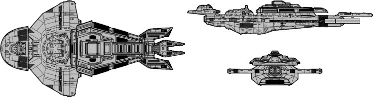

Keldon-class Cruiser (CU)

Battle Stats
Engines and Superstructure
Total Power Units - 120 (Warp Engines - 2x50, Impulse Engines - 20)
MPR - 6/1
Superstructure - 50
Maximum Warp - 3
Industry Points to Build - 8
Beam Weapons (Disruptors)
Max Power - 8
Firing Chart - U
Arcs - 4F, 3F/P, 3F/S, 3A
Bonuses - +3(1-10) +2(11-17) +1(18-24)
Deflector Shields
Max Shield Power - 18
SPR - 1/4